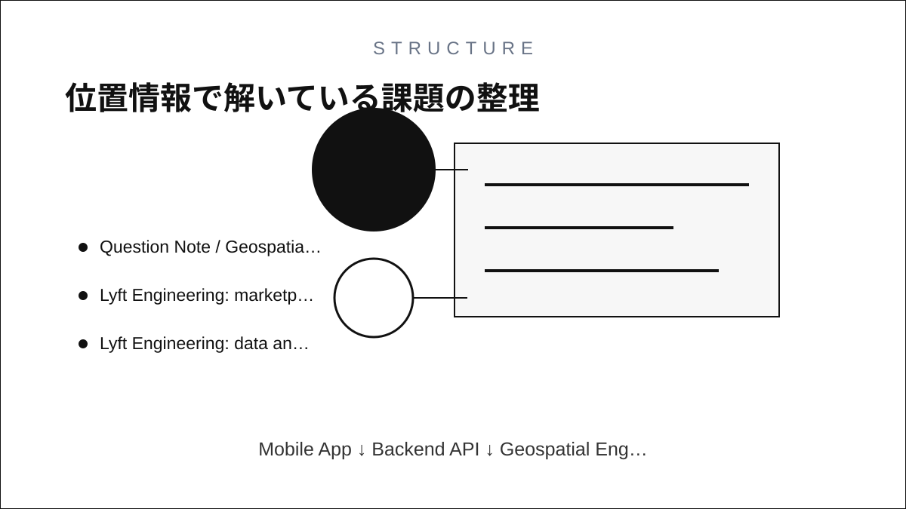
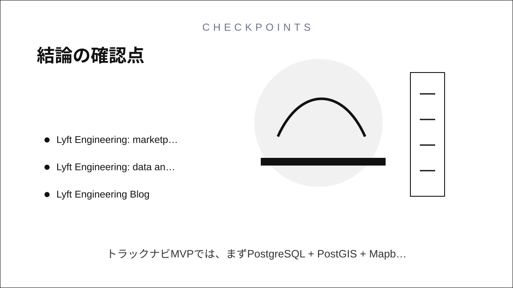

Question Note / Geospatial Architecture
Lyft: ライドシェアのマッチング・ETA・需要予測
何をしている企業か
ライドシェアを中心に、乗客とドライバーをリアルタイムに結びつける移動プラットフォーム。
位置情報で解いている課題
乗客のリクエスト、近隣ドライバー、道路上の移動時間、到着予測、キャンセルリスク、需要供給の偏りを短時間で判断する必要がある。

公開されている技術情報
- Lyft Engineering Blog
- Lyft Engineering: marketplace and mapping articles
- Lyft Engineering: data and machine learning articles
使っている地理空間技術
公開されているLyft Engineeringの記事群では、マーケットプレイス、ETA、地図、需要予測、データ基盤の話題が扱われている。地理空間技術はマッチングと予測の入力として使われる。
「独自GIS」と呼べる部分
独自GIS的な部分は、リアルタイム位置、ETA、マッチング、需要予測をマーケットプレイス判断に統合する層。地図DB単体よりも、意思決定ループの速さが価値になる。
PostGISとの違い
PostGISは保管済みジオメトリへの問い合わせに向く。Lyft型の問題では、DB検索に加えて、秒単位で変わるドライバー位置、道路時間、需給状態をキャッシュ・ストリーム・予測で扱う必要がある。
アーキテクチャ上どこに入るか
Mobile App
↓
Backend API
↓
Geospatial Engine / Index
↓
DB / Cache
↓
Map / Navigation APIこの図でいう Geospatial Engine / Index が、空間インデックス、ルーティング、ETA、マッチング、リアルタイム位置キャッシュを吸収する場所です。PostGISは主に DB / Cache 側の保存・検索基盤として使い、Mapbox等の地図APIは Map / Navigation API 側に置きます。
トラックナビアプリに応用できる点
トラックナビMVPでは、リアルタイムマッチングより、施設候補を正しく出すことが優先。将来、荷主、車両、拠点をマッチングする場合にLyft型の設計が参考になる。
まだ真似しなくてよい点
ドライバー需給最適化、動的インセンティブ、大規模ETAモデルは最初に作らない。
将来スケールしたときに参考になる点
車両数が増えたら、位置更新頻度、キャッシュ粒度、ETA更新、候補ランキングを分けて設計する。
結論
Lyftの事例は、独自GISを「巨大な地図DB」ではなく、空間インデックス、ルーティング、ETA、マッチング、リアルタイム位置キャッシュ、分析基盤の組み合わせとして読むと理解しやすいです。トラックナビMVPでは、まずPostgreSQL + PostGIS + Mapboxで実用範囲を作り、後からH3/S2/Redis GEO/独自インデックスを足す順番が安全です。
